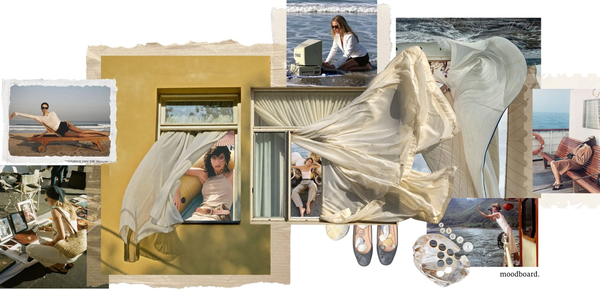
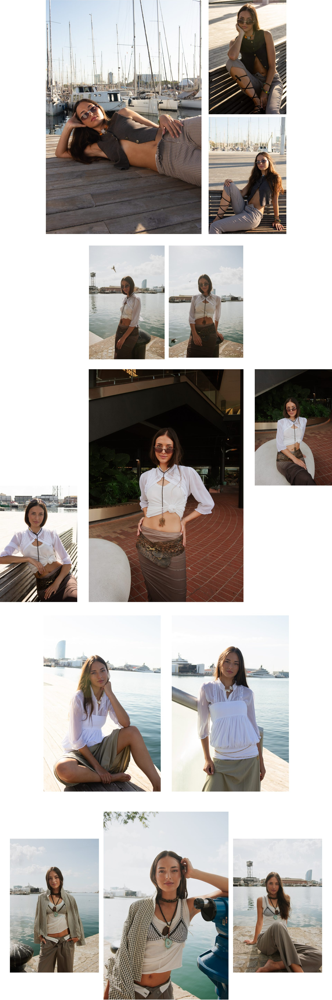

Proyecto 06 — Styling

Ella va al puerto a esperares su espacio de encuentroo búsqueda mejor dicho.
La ves ahí todos los díassin importar la ocasiónella está lista,esperando a navegarcon tal de estar cerca del mar.
